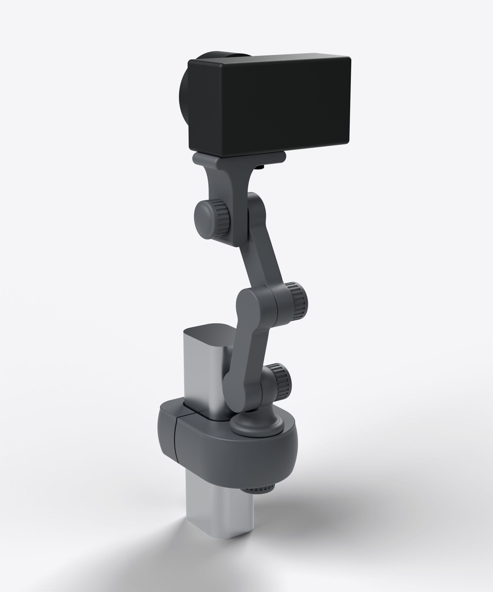
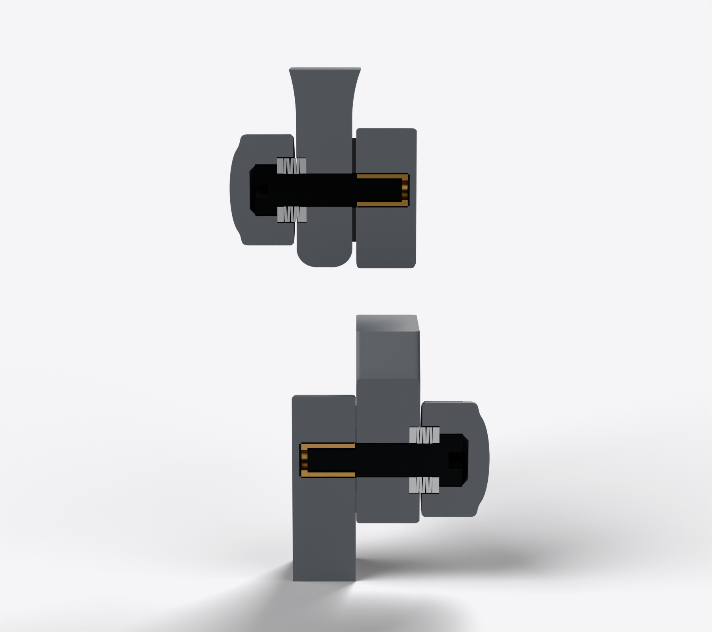
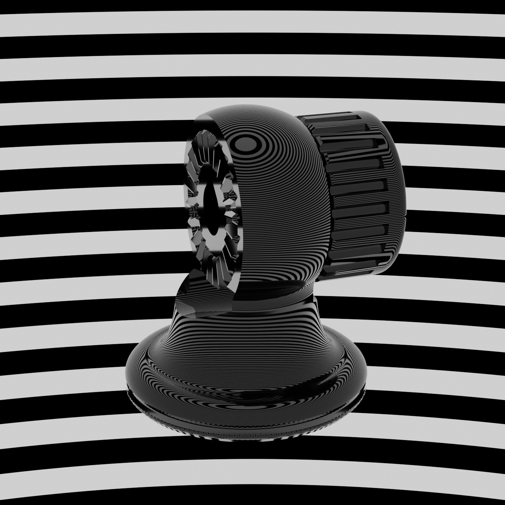
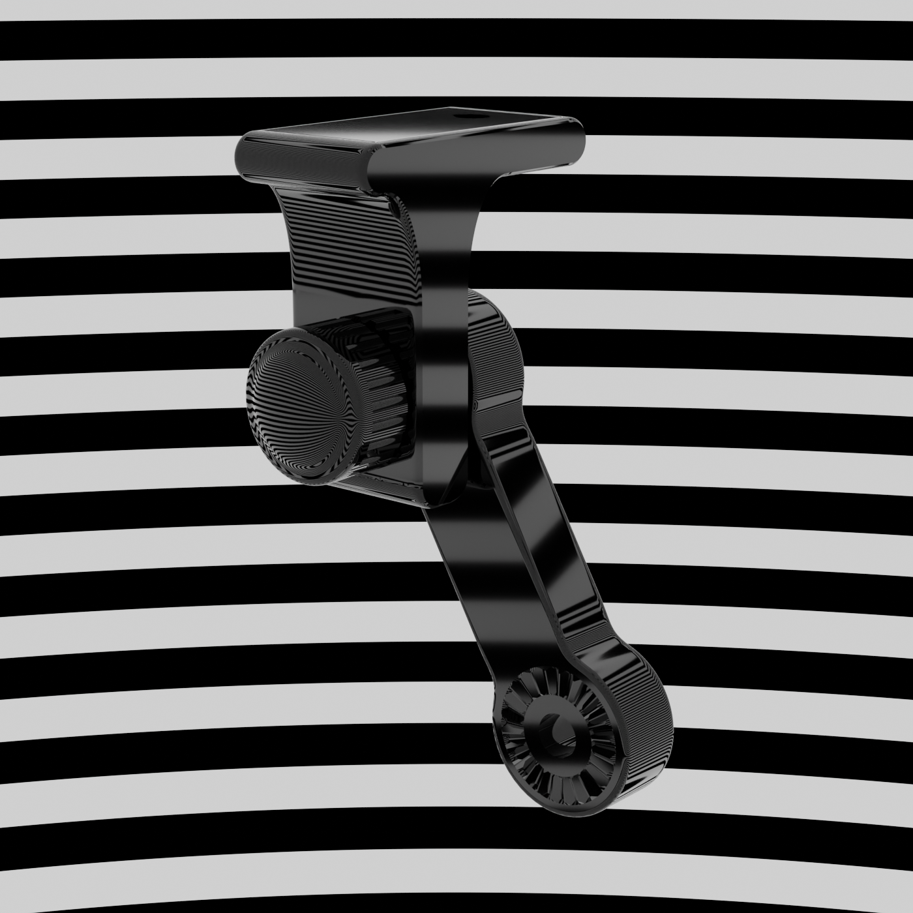
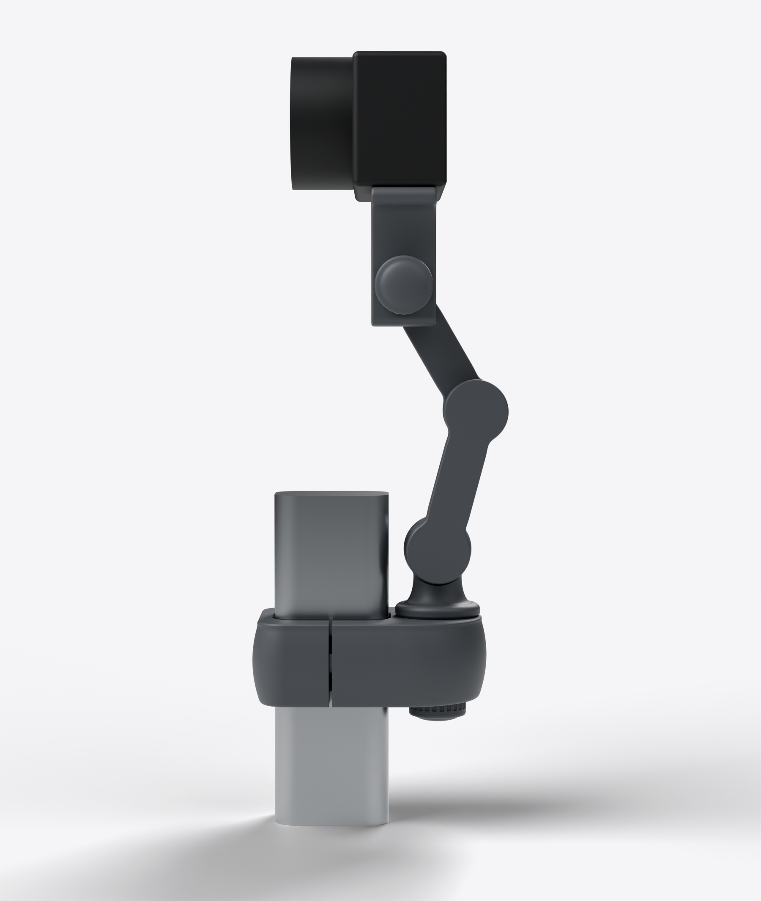
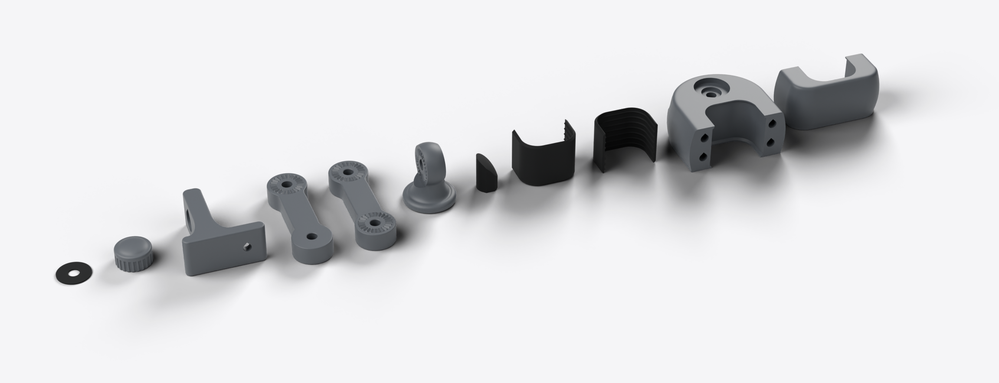

One piece on the column.
A collar, a turned pedestal that pans, two links, a head that holds a ZV-E10. Nothing shows on the front. Every joint tightens to a stop.

- 0 Nmto set: turn until it stops
- ±15°smooth fine tilt
- 360°pan on the pivot
One body, split once.
The collar is one barrel-walled PETG body with a half-ellipse back, split by a single straight seam. A 2 mm TPU liner with 45° ribs grips the column. Four seam stops enter from the back and stop on brass inserts in the front shell, so the front shows nothing.

Pan, reach, fine tilt.
The turned pedestal pans on the collar's back. J1 and J2 are 24-tooth Hirth rosettes for reach and height. J3 turns smoothly on a TPU ring for fine tilt. Every tilt axis stays horizontal at any pan, so the horizon stays level. The camera sits on the lens end of the head, and the battery door opens freely.

Turn until it stops.
Every joint is an ISO 7379 shoulder screw over a stack of DIN 2093 disc springs, into a heat-set insert. Tightened, the shoulder lands on the insert's brass face. Past that point, torque goes into steel and brass. The PETG only ever sees the spring force, which the geometry sets.

Conics, joined without a line.
Parabolic walls, elliptic corners, a turned ball and an elliptic flare, an elliptic knob crown. Every join is curvature continuous, measured on the finished parts. The only creases are the 45° leads on the print-bed edges.





Specs
- Column
- 40.2 × 55.5 mm, corner radius 12 (estimated). Liners touch it with the shells closed.
- Joints
- 4 × M5 seam stops, 4 × M6 stops (pan, J1, J2, J3), all into ruthex heat-set inserts; one 1/4"-20 × 1/2" camera screw.
- Payload
- Checked for 1.0 kg at twice its load (estimated).
- Pictures
- Cycles renders of the exported solids. Not photographs, and not a printed fit.